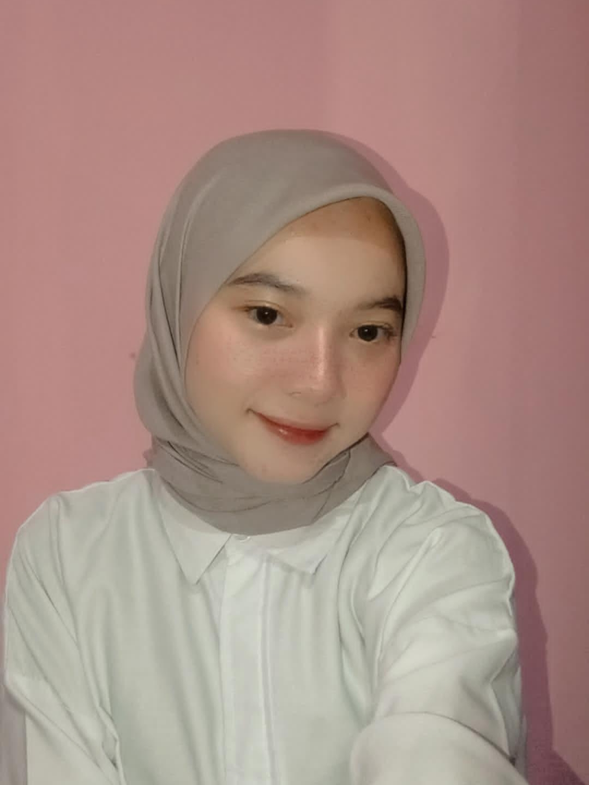

Biodata Diri
NIM : 0110224111
Nama Lengkap : Revani
Tempat & Tanggal Lahir : Bogor, 18 November 2003
Alamat Lengkap : Dramaga, Kp.Manggis Rt 05/04, Desa Dramaga, Kecamatan Dramaga, Kabupaten Bogor, Jawa Barat 16680
Agama : Islam
Jenis Kelamin : Perempuan
No. Telepon / HP : 0895411747863
Email : revani1811@gmail.com